Next: Periodic Signals
Up: Sinusoids, amplitude and frequency
Previous: Synthesizing a sinusoid
Contents
Index
Superposing Signals
If a signal ![$x[n]$](img80.png) has a peak or RMS amplitude
has a peak or RMS amplitude  (in some fixed window), then
the scaled signal 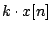 (where 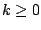) has amplitude 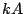. The
mean power of the scaled signal changes by a factor of 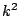. The situation gets
more complicated when two different signals are added together; just knowing
the amplitudes of the two does not suffice to know the amplitude of the sum.
The two amplitude measures do at least obey triangle inequalities; for any
two signals and
(in some fixed window), then
the scaled signal 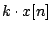 (where 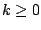) has amplitude 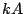. The
mean power of the scaled signal changes by a factor of 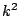. The situation gets
more complicated when two different signals are added together; just knowing
the amplitudes of the two does not suffice to know the amplitude of the sum.
The two amplitude measures do at least obey triangle inequalities; for any
two signals and ![$y[n]$](img2.png) ,
,
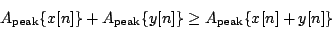
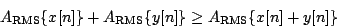
If we fix a window from  to 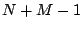 as usual, we can write out the
mean power of the sum of two signals:
to 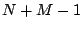 as usual, we can write out the
mean power of the sum of two signals:
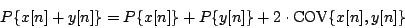
where we have introduced the
covariance of two signals:
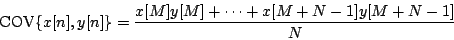
The covariance may be positive, zero, or negative. Over a sufficiently large
window, the covariance of two sinusoids with different frequencies is
negligible compared to the mean power. Two signals which have no covariance
are called uncorrelated (the correlation is the covariance normalized
to lie between -1 and 1).
In general, for two uncorrelated
signals, the power of the
sum is the sum of the powers:
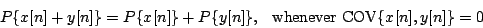
Put in terms of amplitude, this becomes:
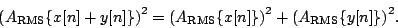
This is the familiar Pythagorean relation. So uncorrelated signals can be
thought of as vectors at right angles to each other; positively correlated ones
as having an acute angle between them, and negatively correlated as having an
obtuse angle between them.
For example, if two uncorrelated signals both have RMS amplitude  ,
the sum will have RMS amplitude 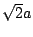. On the other hand if the two
signals happen to be equal--the most correlated possible--the sum will have
amplitude
,
the sum will have RMS amplitude 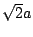. On the other hand if the two
signals happen to be equal--the most correlated possible--the sum will have
amplitude  , which is the maximum allowed by the triangle inequality.
, which is the maximum allowed by the triangle inequality.
Next: Periodic Signals
Up: Sinusoids, amplitude and frequency
Previous: Synthesizing a sinusoid
Contents
Index
Miller Puckette
2006-12-30